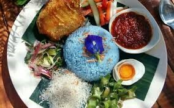

Hi! My name is Nur Adila Binti Ahamad Fadzil.
I have a few names nickname that my friends gave me. They call me "adel", "dila" meanwhile my family calls me "yang".
I was born in Jengka, Pahang on February 9, 2001. This year, I am 21 years old.
I live in Sepang Selangor with my beloved family and also my favorite pet, a cat.
I have a lot of cats. I am the third child of 4 siblings and all my siblings are girls.
My first sister is 25 years old and is a doctor's assistant at a dental clinic. My second sister is 24 years old and is an
employee of one of the companies in Kuala Lumpur. My youngest sister, who is 20 years old is a diploma student majoring in bakery and pastry.
While my parents are the couple, I idolize the most. My dad is 49 years old and is a chef at an airline company.
My mother is 46 years old and she is pre -school teacher at SK Kampung Baharu Lanjut, Sepang, Selangor.

Talking about favorite foods and drinks, I don’t like spicy foods and my family members don’t like either.
My favorite food is Nasi Kerabu which is from Kelantan is the state's traditional rice.
The blue rice is served with several types of side dishes including “ayam percik”, salted eggs, pepper sauce and many more.
For me, the food is very interesting and every time I go to the night market, I will buy Nasi Kerabu that sold by my mother's friend who is from Kelantan.
I am her loyal customer because every Wednesday, I will definitely buy it from her. My favorite drink is I like to drink fruit juice. no matter what kind of fruit,
I definitely love it. I also like to make the juice myself because it will be more suit to my taste than buying it outside.
among the juices I like are carrot juice, apple juice, watermelon juice and many more. when the fasting month arrives,
I will make my own juice for the breaking meal for the whole family. I will tell you a little about myself in this website.
I hope for those who read this will enjoy at all times